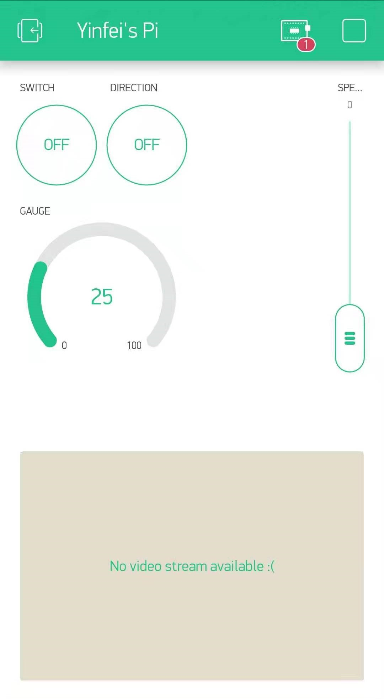

Blynk Assignment
Material Used: Raspberry Pi, LED, Camera module, DC motor, L298N motor drive,Blynk.

The wiring is almost the same as My python setup. The raspberrypi is connect with a motordrive. It is also connected with LED. The Blynk project is use the Blynk phone app to connect the motor and LED. The LED is connect to pin4 and a 330ohm resistor. the motor drive motor1 pin 1 , pin2 and speed pin are connect to GPIO 17, 27, and 22. The camera module is also mounted on the raspberry pi.

There are 2 button, a slider, and a comaera interface in my blynk app. The first button is to control the motor, the second button is to control the direction of my motor. The slider is made for speed control of the motor.
Blynk python code
This program is to control the motor drive and LED. the button 1 is set up as virtual pin 0. whenever the button is pressed the motor chnage from stop state to moving state. And when operation is on the Green LED will light up. The second button is connect to virtual pin 2. whenver the button is pressed the motor change its direction. The slider is set up as the virtual pin 1. the value range from 0 to 100.
Camera code
Camera code was copy from RandomNerd Tutorial. The code is to set up a website online stream using raspberry pi ip address. And the Blynk was able to read the steam with its website address.
There are some issue of my Blynk code. My original plan was to made a global state machine type of code. However, the function of Blynk does not take global variable. I created a global varaible called state. But the state within the Blynk function will become another variable with different address. The second issue is I am still confused with the format function. I check the value track from slider it is a unicode. I use a community code to change the value into integral. But I do need to find a guid of Blynk library. The third is the camera code and My Blynk code use different python version. I might combined them into a singal code later, if I install my Blynk-library into python3 folder.
Lesson learned: python syntax, Blynk library
Reference
Github : Blynk libraryHome Back